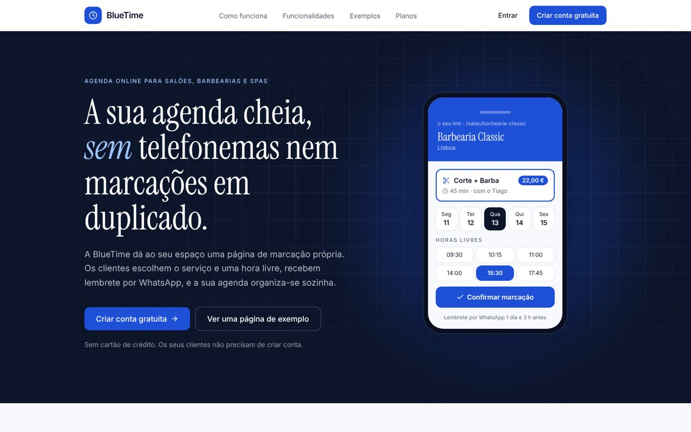
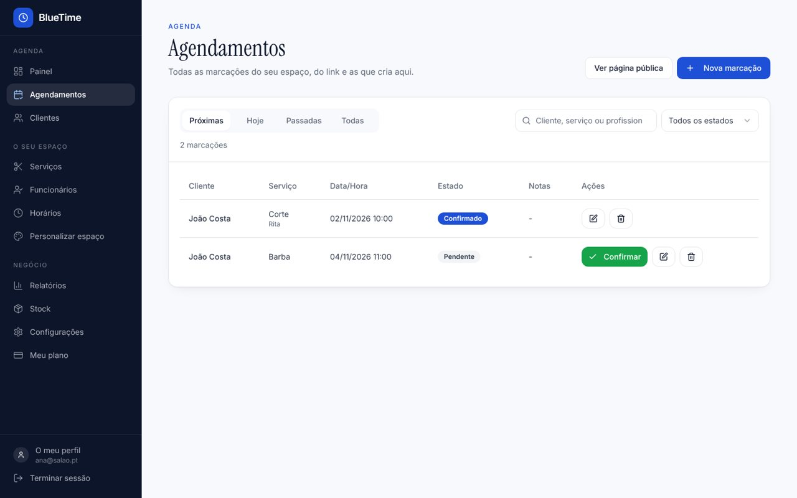
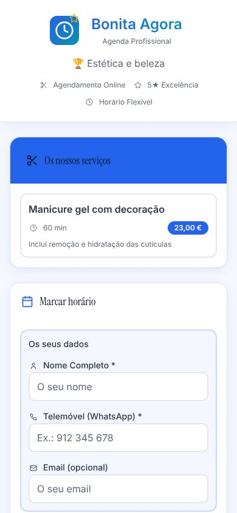

O problema
O tempo perdido entre uma cliente e o telefone
Num salão, o telefone toca a meio de um corte. Marca-se à pressa num caderno, esquecem-se horas, duas clientes ficam com a mesma hora e há quem simplesmente não apareça.
O objetivo do BlueTime é que cada espaço tenha a sua página de marcação, que só mostra horas realmente livres, envia lembretes e deixa o cliente cancelar ou remarcar sozinho. O dono deixa de ser telefonista e passa a ver a agenda organizada.
O que faz
Duas pessoas, duas experiências
O cliente nunca precisa de conta. O dono tem uma área de gestão completa, no telemóvel e no computador.
Para o cliente
Marcar em segundos
Escolhe o serviço, o profissional (opcional) e uma hora livre. A página tem as cores e o logótipo do espaço.
/salao/nome-do-salao
Lembretes
Recebe lembrete por WhatsApp na véspera e 3 horas antes, no idioma em que marcou.
Cancelar ou remarcar
Pelo link que recebe, sem telefonemas. A página atualiza-se sozinha com a mensagem do salão.
Para o dono
Agenda e marcações
Filtros, pesquisa, confirmação com um toque e mensagem ao cliente.
Equipa e horários
Horários semanais, pausas, folgas, feriados e regras por serviço: preparação, limpeza, intervalo, limite por dia.
Avisos com som
Notificação no telemóvel ou no computador quando entra uma marcação, mesmo com a app fechada.
Relatórios
Relatório mensal em PDF e Excel, faturação por profissional e por serviço.
Clientes
Histórico, faltas e, para o RGPD, apagar os dados pessoais sem perder a faturação.
Português e Inglês
Cada pessoa escolhe o idioma. Um teste garante que nenhum texto fica por traduzir.
Ecrãs
Como se vê



Por dentro
O que acontece quando uma cliente marca
Cada passo foi pensado para que nunca haja duas pessoas na mesma hora e para que o salão saiba logo.
- Telemóvel · página do salão
Escolher o serviço e a hora
A página pergunta ao servidor que horas estão livres para aquele serviço, já com folgas, pausas, feriados e as regras do serviço aplicadas.
- Servidor · base de dados
Confirmar sem duplicar
Ao confirmar, a base de dados bloqueia a agenda do salão por instantes, volta a calcular as horas livres e só então grava. Se outra pessoa ficou com a hora no mesmo segundo, a página pede outra.
- Servidor · aviso
Avisar o dono
Um gatilho na base de dados chama uma função que envia a notificação com som para os telemóveis e computadores do dono.
- Servidor · lembretes
Lembrar a cliente
De 15 em 15 minutos, uma tarefa automática envia os lembretes de quem deu consentimento, no idioma certo.
- Telemóvel · link da cliente
Cancelar ou remarcar
A cliente usa o link que recebeu. O mesmo cálculo das horas livres garante que a nova hora também está livre.
Como foi feita
As ferramentas, explicadas sem jargão
Cada linha diz o que a ferramenta é e para que serve nesta app.
Construir e publicar
Criou a primeira versão a partir de descrições escritas e é onde a app fica publicada, em agenda-fluxo-azul.lovable.app.
Guarda todo o código e o histórico de cada alteração, com uma explicação do porquê. Cada alteração aprovada aparece logo no Lovable.
Analisou, escreveu e corrigiu o código a partir dos pedidos da Lenira, sempre em português, e correu os testes automáticos antes de cada envio.
A app por dentro
As ferramentas com que se desenham os ecrãs. Cada página só é descarregada quando é precisa.
Guarda salões, clientes e marcações. Regras de segurança na base de dados garantem que cada salão só vê os seus dados.
Avisam o dono quando entra uma marcação, com a app aberta ou fechada.
Envia os lembretes aprovados. Sem credenciais, os lembretes aparecem no painel para enviar com um toque.
Criam o relatório mensal em PDF e em Excel, só quando se carrega em descarregar.
Testar antes de publicar
31 testes às regras: datas em Lisboa, telefones, planos, traduções.
39 cenários, cada um no computador e no telemóvel: marcar, cancelar, gerir, notificações.
22 páginas verificadas segundo as normas WCAG 2.1 AA.
Erros reais
O que se encontrou e como ficou resolvido
A maior parte veio de usar a app como cliente e como dona de salão.
Uma marcação parecia aparecer 3 ou 4 vezes.
Eram marcações de teste com o mesmo telefone, e cada uma mudava o nome do cliente. Agora o nome mantém-se e o novo fica nas notas.
O limite diário de um serviço era guardado mas não tinha efeito.
As regras por serviço passaram a contar no cálculo das horas livres, ao marcar e ao remarcar.
O salão tinha de ir ver de tempo a tempo se entrava uma marcação.
Avisos com som no telemóvel e no computador, mesmo com a app fechada.
Regras antigas do protótipo deixariam contas "staff" ver outros salões.
Cada dono só vê o que é seu, em todas as tabelas, verificado como visitante e como dono.
O Excel era uma tabela simples.
Um relatório com o mesmo aspeto do PDF, com indicadores e cores por estado.
Textos claros demais e botões sem nome para leitores de ecrã.
22 páginas passam a verificação de acessibilidade, que faz parte dos testes.
Em números
O projeto em números
Com franqueza
Limites atuais
- Os pagamentos (Stripe) estão em modo de teste.
- O envio automático por WhatsApp espera a aprovação dos modelos na Meta.
- Ainda não tem domínio próprio nem monitorização de erros.
- Ainda não há salões reais a usar a app.
A seguir
Próximos passos
- Pôr um ou dois salões a usar e medir as faltas antes e depois.
- Ativar os pagamentos e os lembretes automáticos.
- Domínio próprio e monitorização de erros.
O meu papel
Lenira Leitão
A ideia, as decisões de produto, os testes como cliente e como dona de salão e a direção de cada correção foram meus. O código foi escrito com ferramentas de IA (Lovable e Claude Code), a partir dos meus pedidos.
Aprendi a pedir revisões com provas, a testar no telemóvel e no computador, a proteger os dados de cada salão e a não aceitar "está feito" sem ver.